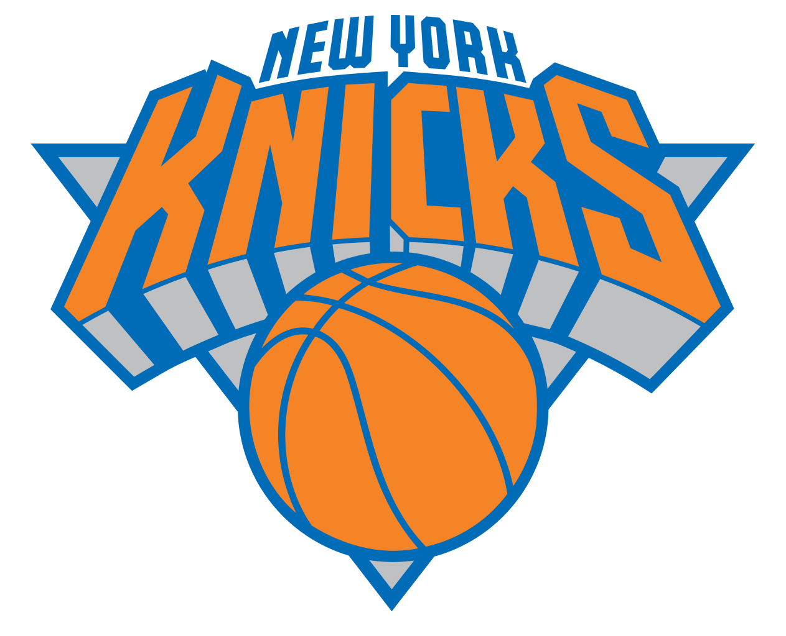

New York Knicks
The main basketball team of NYC is the New York Knicks.
Visit the Website
- They've won a total of 2 championships, in 1970 and 1973
- They were founded in 1946
- The Knicks have been home to many legendary players over the years, including Patrick Ewing, Carmelo Anthony, Charles Oakley and Willis Reed
- The team as a whole is worth approximately $3 billion
- Their arena is the world famous Madison Square Garden
Visit the Website

New York Yankees

The main baseball team of NYC is the New York Yankees. There's also a smaller team, the New York Mets.
Visit the Website
- They've won an incredible total of 18 division titles, 40 AL pennants and 27 World Series Championships
- They were founded in 1901, under the name of the Baltimore Orioles, and were later renamed the Yankees in 1913
- The Knicks have been home to many legendary players over the years, including the world famous Babe Ruth, Mickey Mantle and Derek Jeter
- The team has one of the most well known rivalries in US Sports with the Boston Red Sox
- The team as a whole is worth approximately $3.4 billion
- Their stadium is, of course, the Yankee Stadium, originally built in 1976
Visit the Website
New York Rangers
The main hockey team of NYC is the New York Rangers. There's also a smaller team, the New York Islanders.
Visit the Website
- They've won 4 Stanley Cups, 2 Conference Championships, 3 President's Trophies and 8 Division Championships
- They were founded in 1926, making them one of Ice Hockey's oldest teams
- The team colors, red white and blue, as well as their classic logo, can be seen on countless pieces of clothing from over the years.
- Their arena is actually the same as the Knicks; Madison Square Garden
- The team is one of the most expensive teams in the NHL, valued at around $1.2 billion
Visit the Website